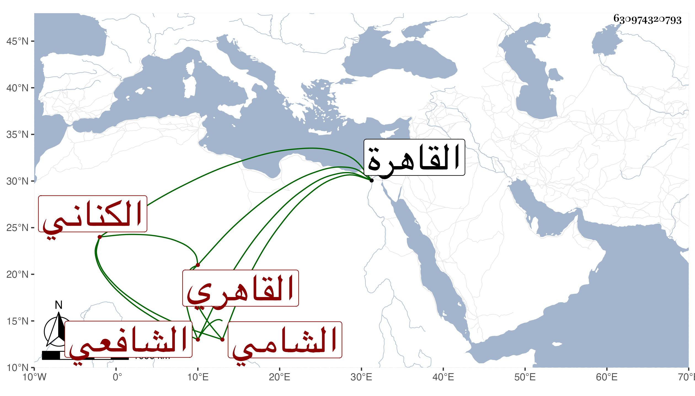

0902Sakhawi.DawLamic.ITO20230111-ara1.EIS1600.630974320793
Biography ID: 630974320793
أحمد بن أحمد شهاب الدين الكناني الشامي ثم القاهري الشافعي أحد الفضلاء ممن صحب الولوي بن تقي الدين البلقيني ولازمه واختص به وحضر دروسه ونزل بواسطته في بعض الجهات بل ناب عنه في خطابة الحجازية والميعاد بها وأجاد في تأديتها وجلس قليلا ببعض الحوانيت للشهادة ، وكان مديما للدين مستكثرا من تحصيل الكتب بخطه مشاركا في الفنون وراغبا في المباحثة والمناظرة ، وقد أخذ بالقاهرة عن الشهاب الأبدي في المنطق والزين البوتيجي في الحساب وغيره والزين زكريا في الفرائض والحساب وغيرهما ولم يكن يقدم عليه من شيوخه غيره والبدر أبي السعادات البلقيني والبقاعي في آخرين وشرع في اختصار شرح البخاري لشيخنا فكتب منه جملة وربما أقرأ وكان هم أن يتحنبل فأسمعه العز قاضي الحنابلة ما يكره لظنه فيه قصد مزاحمته في الوظائف وغيرها لشدة فقره وعدم رواجه بين كثير من أهل مذهبه ممن كان البقاعي حين تردده إليه يقرر عنده أنه أمثل منهم ويحضه على منازعتهم فكف ، ولم يزل على طريقته حتى مات في المحرم سنة اثنتين وستين عن قريب الثلاثين ودفن بتربة جوشن رحمه الله وإيانا .
